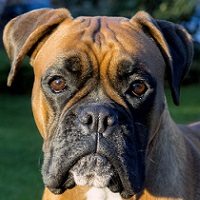
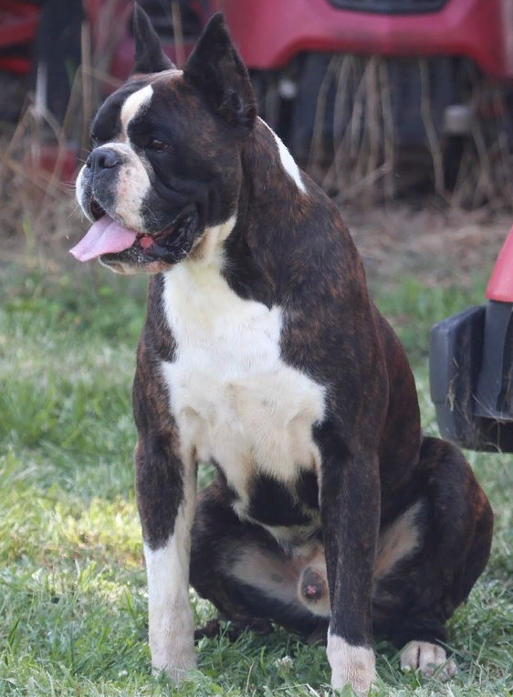
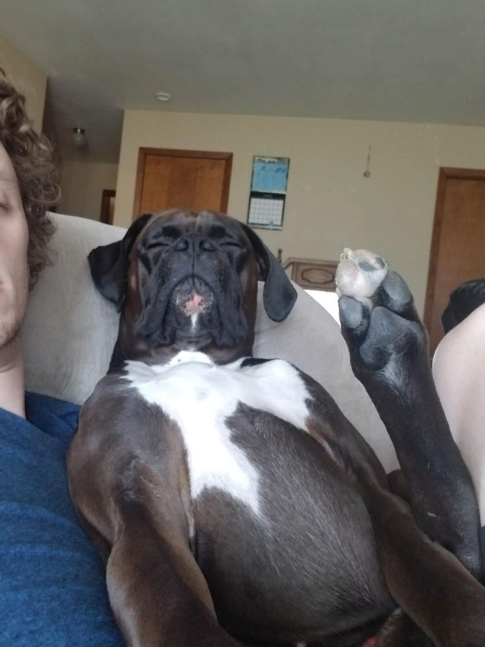
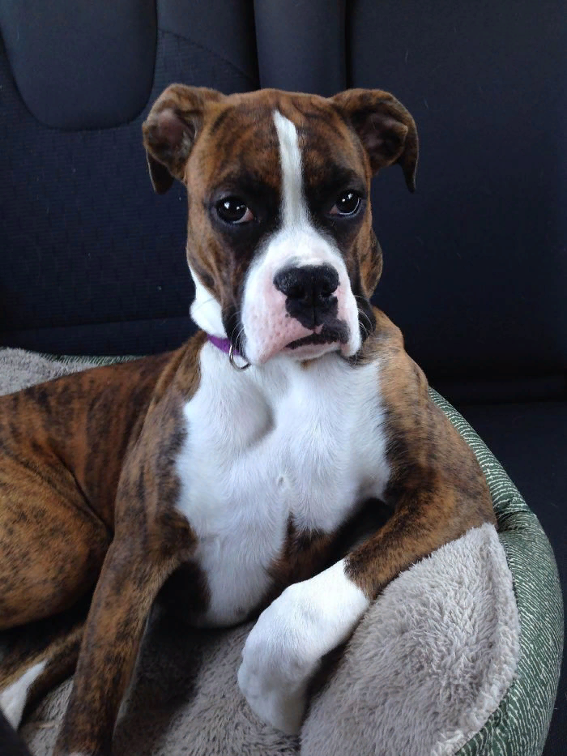
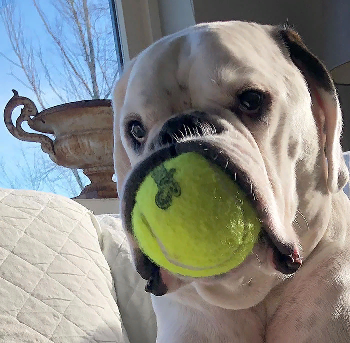
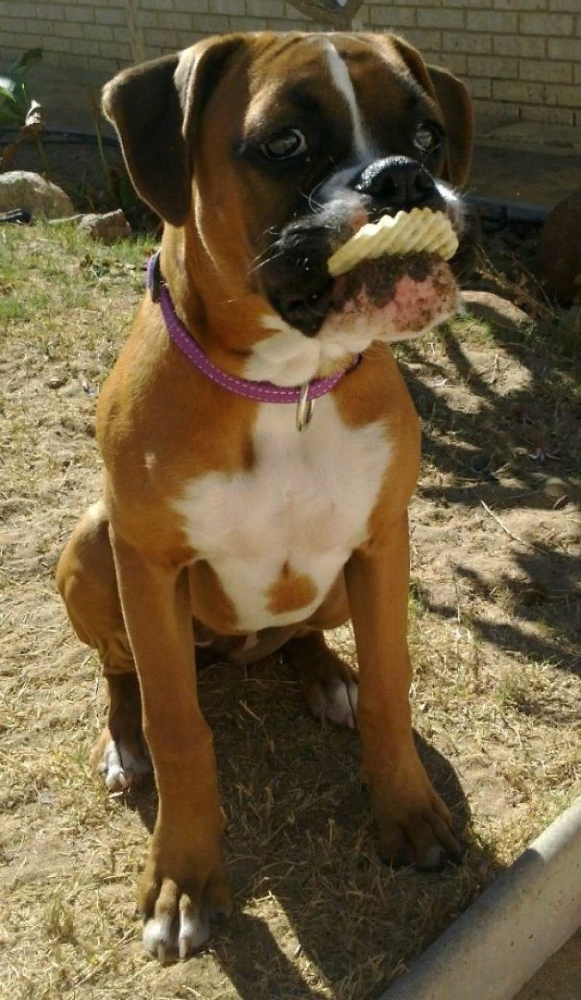

Боксер

Оценка породы:
Ум
Линька
Популярность
Охранные качества
Игровая активность
Сторожевые качества
Дружелюбность к детям
Склонность к дрессировке
Характеристика породы
Краткое описание
Условия содержания:
В доме без сада, в квартире
Длина шерсти:
Короткая
Размер взрослой собаки:
Рост самок – 53-59 см, самцов 57-63 см,
вес самцов примерно 30-35 кг, самок – 25-30 кг
вес самцов примерно 30-35 кг, самок – 25-30 кг
Средняя продолжительность жизни:
9-15 лет
Выгул:
Нужен обязательный минимум 2 раза в день
Потребность в физической нагрузке:
Средние потребности в физической нагрузке (прогулки от 1 до 3 часов в день)
Стоимость щенка:
От 10000 до 30000 рублей
Фото взрослой собаки





Особенности характера и поведения
Былая агрессивность предшественников Боксеров сменилась добродушием и уравновешенным психическим состоянием. Несмотря на свой достаточно устрашающий вид, Немецкие Боксеры считаются отличными семейными питомцами и даже няньками для детей. Они легко идут на контакт и могут различать друзей и врагов. Однако, даже при всех положительных качествах, этой собаке необходима дрессировка и воспитание.
Достоинства
Определенно рабочая собака, выведенная для службы и помощи человеку.
Прирожденный охотник и охранник, предан своему хозяину, будет защищать его ценой своей жизни.
Бесстрашен и самоотвержен.
Легко обучается благодаря покладистому характеру и острому уму. Поддается дрессировке.
Отлично ладит с людьми, особенно с детьми. Станет другом семьи, компаньоном в походах и поездках.
Боксеры игривы и веселы, любят бегать и нуждаются в регулярной физической нагрузке.
Не склонны к агрессии – у них достаточно крепкая нервная система.
Немецкий Боксер – хитрая и забавная собака, в которой всегда уживается и суровый защитник и ребенок.
Он будет дурачиться дома, развлекаться с хозяином, но не стоит забывать, что эта порода создана для охоты.
Достаточно неприхотлив в уходе и подходит для содержания в квартире.
Специалисты советуют эту породу даже заводчику-новичку.
Часто ее используют как служебную для работы в полиции, службе МЧС, таможенном контроле.
Недостатки
Немецкие Боксеры не переносят одиночества.
Им необходимо постоянное внимание со стороны хозяина и искренняя любовь.
Плохо относятся к сквознякам и морозам из-за короткой шерсти.
Несмотря на хорошее отношение к окружающим, у этих собак могут возникать трудности с другими питомцами, особенно собаками.
Они всегда настроены идти в бой.
При выгуле необходимо держать питомца на поводке, чтобы избежать драк и попыток животного угнаться за «добычей».
Могут хитрить.
Из-за этой характерности, стоит с детства приучать и воспитывать
Боксера, ограничивая его рамками. Любят попрошайничать и манипулировать чувствами хозяина.
Собака склонна к ожирению и имеет проблемы с кишечником: диареи, метеоризмы.
Заводчик должен принять тот факт, что у большинства представителей этой породы сильное слюнотечение.
Они нечистоплотны, любят валяться в грязи.
Помимо этого часто храпят во время сна.
Уход и содержание
Немецкий Боксер не сложен в содержании, отлично подходит для жизни в квартире и в большой семье.
Требуется соблюдать разработанный рацион питания, следить за чистотой шерсти и слизистых и уделять внимание дрессировке.
Для удобства питомца хозяин должен выбрать место и застелить его удобным лежаком или одеялом (желательно без прямого солнечного света и сквозняков),
приобрести ошейник и прочный поводок, металлическую или керамическую миску с регулируемой высотой, качественные игрушки.
Для щенка в доме определяется «туалет», устилается пеленками.
Так как гулять с ним в раннем возрасте нельзя, собаку нужно приучить к одному месту.
Позже питомец регулярно выгуливается.
Питание
При определении меню для своего питомца, стоит учесть, что Боксер склонен к ожирению. Его нельзя перекармливать и часто баловать.
Размер порции высчитывается по формуле: 20% от веса собаки. Щенков кормят 4-5 раз в день, взрослого – 2 раза.
Для полноценного развития необходимо включить в рацион все полезные соединения и элементы.
Большая часть из них содержится в сухих кормах премиум класса.
Чтобы собака развивалась правильно, ее нельзя кормить человеческой едой,
в особенности острым, сладким, пряным, мучным и соленым. Не рекомендуется и жареная пища.
В качестве лакомства советуется покупать специальные прикормки или давать питомцу порезанный сыр.
Существует миф о том, что всем собакам необходимы кости.
На самом деле с этим продуктом нужно осторожничать.
Мелкие и острые косточки могут тяжело травмировать пищеварительную систему,
поэтому нельзя кормить питомца трубчатыми куриными и рыбными костями, не рекомендуются вареные говяжьи и свиные.
Разрешается давать сырые бедренные костяшки, которые питомец не сможет разгрызть, но отлично почистит ими свои зубы.
Здоровье
Немецкие Боксеры не отличаются крепким здоровьем.
Продолжительность жизни колеблется от 9 до 15 лет, однако среднее значение – не больше 10.
У этой породы много заболеваний, передающихся по наследству. Часто умирают от рака (около 40% случаев).
Помимо этого не устойчивы к жаркому и холодному климату,
нуждаются в теплой подстилке и защищающей одежде. Могут заболеть из-за сквозняков.
Заводчики стремятся снизить смертность породы, но до идеального здорового организма еще далеко.
К сожалению, набор болезней у этих питомцев обширный.
Они, как никто другой, нуждаются в своевременной вакцинации.
Список заболеваний, к которым склонны Бобтейлы обширный, однако при правильном уходе и своевременном обращении к ветеринару большинство можно избежать:
Многие болезни Боксеров связаны с пищеварением: заворот кишок, метеоризм, диарея, вздутие, ожирение, аллергии.
Избежать их можно с помощью выверенного рациона и строгой диеты.
Также особи страдают деформацией черепа и челюсти, что приводит к нарушениям дыхания.
Характерны дисплазия суставов и искривление позвоночника.
Могут рождаться глухими, к этому склонны собаки с белым окрасом.
Около 20-40% щенков появляются глуховатыми на одно или два уха.
Помимо этого Немецкие Боксеры склонны к болезням глаз (заворот века).
Частые случаи кардиологических заболеваний, которые прогрессируют с возрастом собаки.
Нередко питомцы умирают от рака.
Выгул
Боксеры не нуждаются в усиленных тренировках и физических нагрузках.
Они привыкли жить на небольших территориях, и не приспособлены для улицы.
Однако, как и всем собакам, Немецким Боксерам необходим выгул 2-3 раза в день по 30-40 минут.
Щенков выгуливают чаще (начинают с 6-8 месяцев).
Чтобы избежать перегрузки позвоночника и конечностей,
щенков спускают по ступенькам на руках и гуляют с ними не больше 10-15 минут, но по 5-6 раз в сутки.
Эти собаки любят бегать, но отпускать их с поводка нежелательно.
Они могут наброситься на собак, чтобы побороться или поиграть, но со своими размерами способны навредить.
Помимо этого Боксеры склонны к выслеживанию кошек и мелких жертв, часто убегают.
Кинологи советуют использовать шлейку, а не ошейник, так собака чувствует себя комфортнее.
Животное должно много двигаться: прыгать, бегать за мячом, проходить через препятствия.
Без должных нагрузок эта порода теряет контроль.
Чем больше энергии Боксер потратит во время прогулки, тем спокойнее будет дома.
Нельзя позволять питомцу поднимать грязные предметы.
Он может проглотить мелкие детали или подхватить инфекцию.
Важно давать ему социализацию и общение с животными и людьми.
Уход за шерстью
Шерсть у Немецкого Боксера тонкая и короткая, поэтому эти питомцы не нуждаются в постоянном вычесывании.
Достаточно протирать собаку полотенцем раз в неделю либо вычесывать мягкой резиновой щеткой от выпавших волос (особенно в период линьки).
Купать нужно не чаще раза в год, однако советуют раз в месяц чистить шерсть раствором уксуса, воды и спирта (1:1:1).
Особого внимания требуют складки на морде и глаза питомца.
Их нужно вытирать ватой или платком 2-3 раза в неделю, уши моют 1 раз в месяц.
Необходимо чистить зубы питомцу мягкой детской щеткой и специальной пастой.
Когти подрезают каждый месяц.
Уход за лапами – важный пункт в содержании.
Хоть кожа подушечек Боксера достаточно грубая, часто травмируется.
Нужно мыть или протирать конечности после прогулок и смазывать жирным кремом.
Видео о породе